Five research projects in machine learning for health, each presented by its aim, exploration, approach and results.
Projects
01
Tissue-Guided Cell Detection
OCELOT dataset
2025Team of 3 · first authorPublishedIUPESM 2025
Tissue-guided detection means telling tumor cells from background cells using where they sit in the tissue, not only how they look.
Aim
Does adding tissue-level context improve tumor cell detection — and if so, by how much, at which integration point, and under what conditions does it stop helping?
EXPLORATION — TUMOR CELLS CLUSTER INSIDE CANCER TISSUEEDA finding
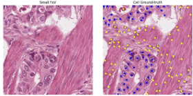
Blue = tumor cells, yellow = background cells. Shape, size, and texture all play some role, but location was the main one: a cell surrounded by tumor cells is usually a tumor cell itself.
Approach
The EDA showed spatial context matters more than appearance, so we first built an accurate tissue segmentation model (U-Net++ with an SE-ResNet50 backbone) to supply it. Its output is then integrated at two points: at pre-processing, to see how the cell model learns from it, and at post-processing, as a correction to the cell detector's predictions.
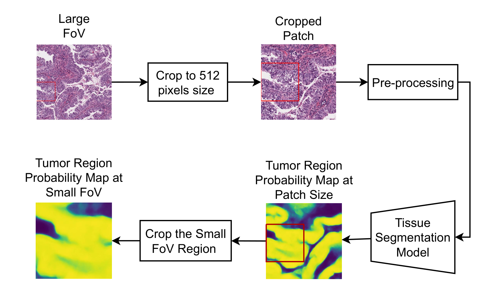
FIG. 1 — tissue segmentation
Stage 1: a U-Net++ with an SE-ResNet50 encoder turns the wide view into a tumor probability map, chosen to handle the ambiguous cancer boundaries seen in EDA.
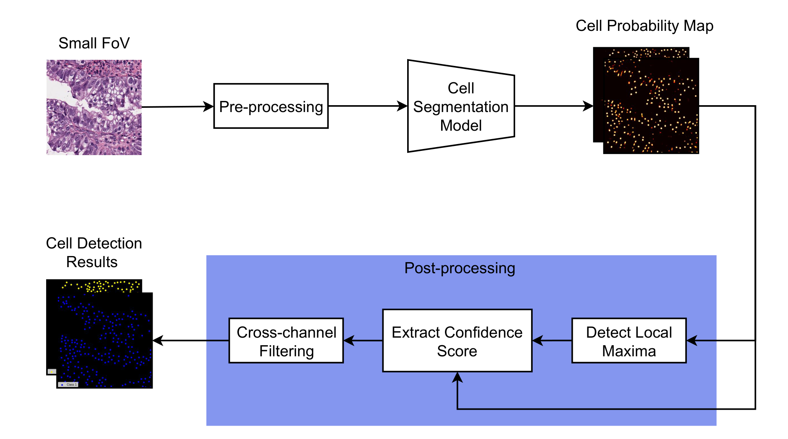
FIG. 2 — cell detection
Stage 2: a lightweight Attention U-Net (ResNet34) detects tumor and background cells on the close-up view, since cells are already visually distinguishable at that scale.
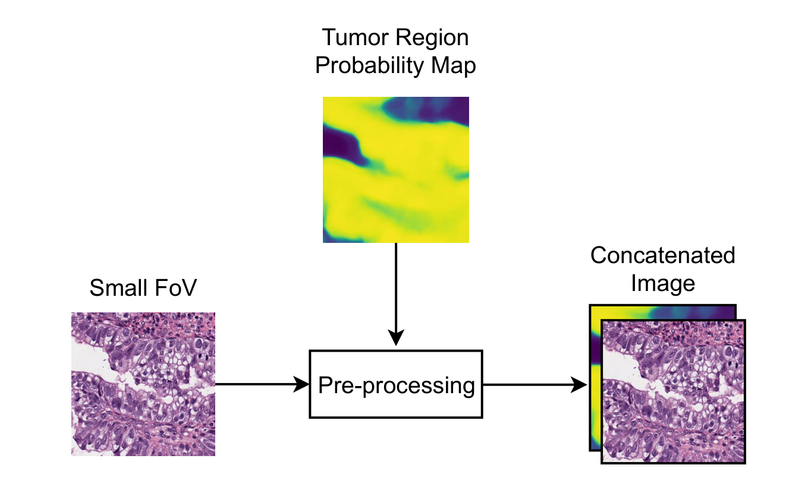
FIG. 3 — pre-processing integration
The tumor map is concatenated to the small FoV as a 4th input channel, so the detector learns to use tissue context end-to-end. Best overall mF1.
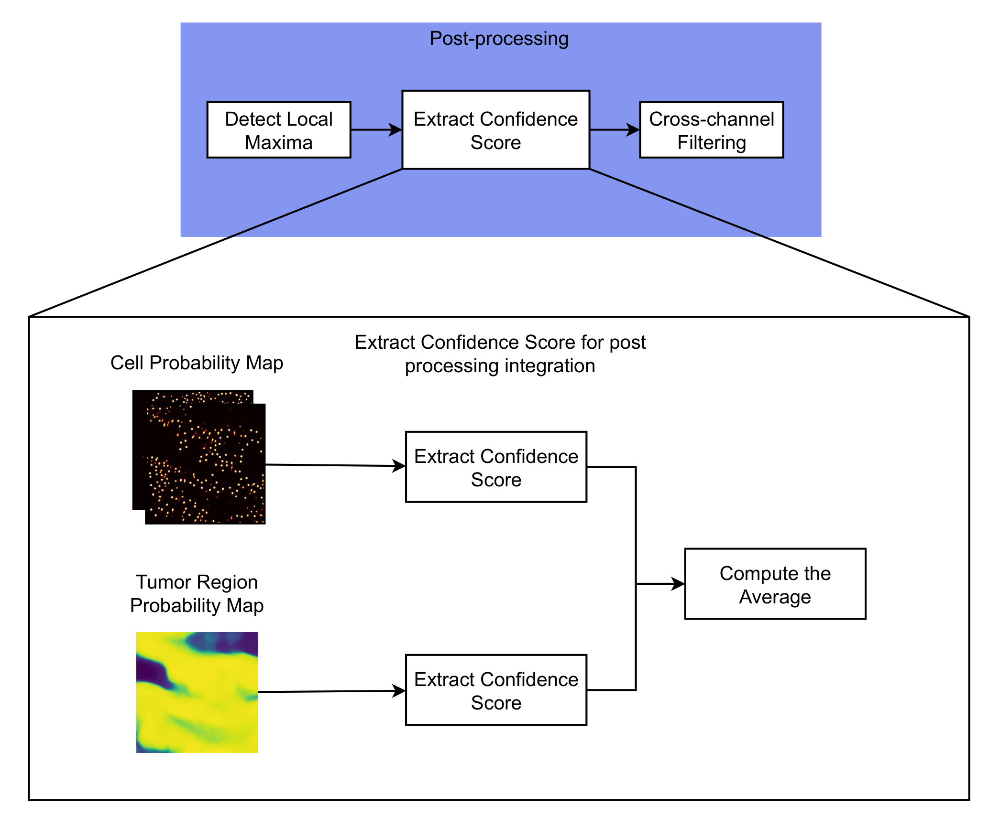
FIG. 4 — post-processing integration
After detection, confidence from the tumor map is averaged with the model's own score to refine predictions, no retraining required. Best tumor recall.
Outcome
On the OCELOT test set both beat the no-integration baseline. Pre gave the best mF1, post the best tumor recall.
Test-set mF1BaselineWith tissue map
No integration
0.5724
Post-processing
0.6210
Pre-processing
0.6929
+0.1205mF1 gain (pre)
0.7375tumor recall (post)
0.9092tissue-map mF1 (SoftCTM 0.8951)
Qualitative comparison — small FoV, ground truth, baseline, proposed
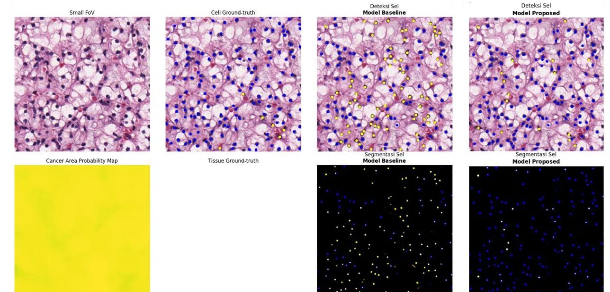
Succeeds — the tissue map is accurate, and cells the baseline misread as non-tumor are correctly reclassified as tumor.
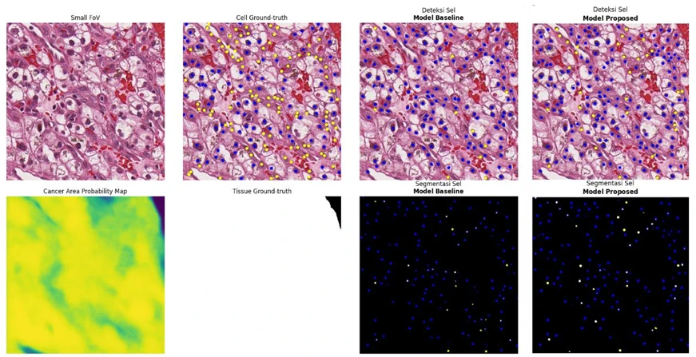
Accurate map, no gain — non-tumor cells sit inside a dense tumor cluster; even a correct tissue map can't separate them.
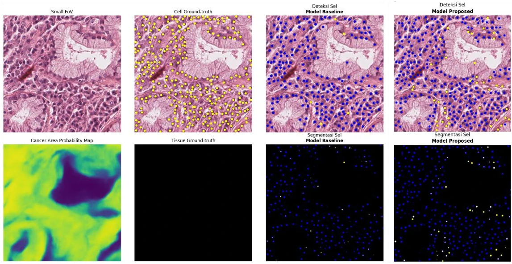
Wrong map, no gain — the tissue map is inaccurate here, so it gives the cell detector no useful signal to correct.
Limits
Absolute mF1 (0.6929) sits below prior work (0.7056, 0.7123); the gain is over the no-integration baseline. Scattered tumor cells gain little, even with a reliable map.
Anamnesis is the patient history a doctor takes by talking with the patient. This tool listens to that conversation and fills in the screening form for them.
THE CORE IDEA — SPEECH IN, EVIDENCED ANSWERS OUTReal recording · verbatim
Spoken in the consultation (Whisper output)
Ada saudara sekandung yang sakit hepatitis B? Enggak. Enggak ya?
“Any siblings with hepatitis B?” “No.” “No, right?”
Form answers the model filled in
Apakah Anda memiliki ibu kandung/saudara sekandung yang menderita Hepatitis B?Tidak“Ada saudara sekandung yang sakit hepatitis B? Enggak”
The patient answers a turn after the doctor asks. Each answer must match an allowed option and quote the transcript, or it is rejected.
Aim
To build a pipeline that turns a spoken doctor–patient consultation into structured answers for a 128-question screening form.
EXPLORATION — WHAT MOVED THE RESULT, AND WHAT DIDN'TOne recording
The extension's existing keyword matcher, tested on a real transcript, filled 0 of 17 answers.→Free speech doesn't match form wording, so an LLM reads the transcript against the questions instead.
Window size drove recall: 13 of 39 correct at 3 segments, 26 at 6. The revision rule alone added nothing at 3 segments (14 vs 13).→Use a six-segment sliding window.
Denoising the audio before Whisper made transcripts worse: word error rate rose from 40% to 56–73% across three denoisers.→Leave denoising out of the pipeline.
Approach
Audio in, validated answers out: Whisper transcribes the consultation, personal information is scrubbed out, then an LLM reads a sliding window of that transcript against the full question bank and answers only where it can point to supporting words in the transcript (FIG. 5).
The same pipeline runs against a hosted model, with personal information scrubbed first, or against a local model on a server you control, so no transcript leaves it. The local runs add guards against invented answers: a number check, a topic gate and a character n-gram gate.
FIG. 5 — speech to validated form answers
Outcome
On one 6.3-minute recording, the best hosted run answered 26 of the 39 questions correctly (precision 79%, recall 67%), up from 13 with a 3-segment window. Three later runs of the same configuration scored 22 to 28 correct at 48–67% precision, so 79% is the top of a range. All figures are in-sample: the filters, window and question bank were tuned on this recording.
Best runWindow 3Window 6
Precision
57% → 79%
Recall
33% → 67%
13 → 26correct of 39 asked (best run)
46 s → 7 smedian lag with 3 concurrent calls (P90 79 s → 11 s)
Best run errors: 7 wrong of 33 answered, 10 missed
26 correct3 wrong value4 answered but never asked10 missed
Hosted vs local model, same recording
Setup
Correct of 39
Precision
Recall
Hosted (DeepSeek), best run
26
79%
67%
Hosted, three later runs
22–28
48–67%
56–72%
Local Qwen2.5-7B, one V100
16
47%
41%
Local Qwen3.5-9B, one T4
27
57%
69%
Reading the table. The 9B local model on a single T4 landed inside the range of the hosted model's repeat runs, with patient text never leaving the server. The local Qwen2.5 server also gave identical results on repeat, where the hosted model varied by 2–3 correct answers.
Speed. A local call takes about 1 s (median 0.9 s, P90 6.8 s for the 9B). End-to-end lag with a local model has not been measured.
Limits
One recording, tuned on it, with no held-out test. The window and revision rule were not re-ablated on the local model, and hosted cost is unmeasured. A 62-question pre-filtered bank reached 82% recall, but against a narrower 34-item reference, so it is not comparable.
PythonFastAPIfaster-whisperDeepSeek via OpenRouterChrome extension (MV3, JavaScript)Qwen2.5-7B · Qwen3.5-9B via Ollama (local)
Private repo. Patient data withheld.
03
Virtual Screening Pipeline
SBVS proof of concept · SARS-CoV-2 Mpro
2026PrototypeRanking not validated
Virtual screening docks a library of small molecules into a protein pocket and ranks them by predicted binding, to choose which ones are worth testing in the lab.
Aim
To build a structure-based virtual screening pipeline and test whether a consensus of docking (Vina, DiffDock) and rescoring (GNINA, Boltz-2) ranks known actives near the top of a library. Pilot target: SARS-CoV-2 main protease (PDB 6LU7).
EXPLORATION — THREE CHECKS BEFORE TRUSTING THE SCORESPilot: 50 compounds + 5 known actives
0.104
kcal/mol median spread, 5 Vina seeds
Vina converged. Cost tracked exhaustiveness, not box size (204 s at 8,000 ų vs 193 s at 14,549 ų).
ρ = 0.28
Vina vs DiffDock rank agreement, n = 47
The two docking engines barely agree; their top 5s share one compound.
top 5 of 47
Boltz-2 rank of the 5 known actives
Median score 0.987 vs 0.230 for the rest. The actives are also heavier (median MW 483 vs 390), so size may explain part of it.
Setup bugs caught on the way: a drug-likeness filter that rejected known actives, a wrong pocket centre from hetero-atom-only ligand selection, DiffDock's config file overriding command-line arguments, and GNINA rejecting multi-model files.
Approach
Protein and library go in, a ranked and explained shortlist comes out: both are prepared, every compound is docked two ways and rescored two more ways, ranks are averaged across methods, and the result is written up as a report with a 3D viewer (FIG. 6).
The three checks above set the design. Convergence fixed Vina at 16 exhaustiveness with 5 seeds, and the weak agreement between engines is why no single score is trusted on its own.
FIG. 6 — from protein and library to a ranked, explained shortlist
Choice
What led to it
Alternative
Vina: exhaustiveness 16, 5 seeds
Seed-convergence check
Exhaustiveness 8 (62.5 s per run)
Rank Boltz-2 on affinity_probability_binary
Its documentation, not an experiment. The other field is only meant for comparing actives.
affinity_pred_value
Known actives pass the same filters
An exempt set would be separable by size alone
Exempting them
Rank-average consensus (v1)
Needs no labels. The weak ρ = 0.28 suggests it may dilute Boltz-2.
Learned re-ranker, which needs labelled data
Boltz-2 MSA
Still undecided
Single sequence vs a public MSA server
Outcome
All six stage gates passed, so the pipeline runs end to end. Whether it ranks well is a different question, and the answer so far is mixed: the consensus beats Vina alone but not Boltz-2 alone.
FIG. 7 — where the five known actives landed among 48 compounds (Boltz-2 ranked 47)
6 / 6stage gates passed
1, 2, 3, 5, 7consensus ranks of the actives
87 / hligands docked by Vina
The report the pipeline produces, from a 5-compound run
Screen recording, 56 s — top hit with its property profile, each scorer in its own units, key protein contacts, a rotatable 3D pose, the ranking table, and the report's own caveats. The DiffDock column is empty in this demo run.
What held up. The top protein contacts on the best Vina poses (GLN189, HIS41, GLU166, MET165, MET49) are canonical Mpro active-site residues, which supports the pocket and receptor setup.
What didn't. Vina alone showed no enrichment of the known actives, and four Vina runs timed out, all stereoisomers of one compound.
Limits
Only 5 known actives, heavier and more polar than the background, so size is a confound. The reference structure (6LU7) is covalently bound, so redocking RMSD is not valid validation. The pilot is small (50 compounds), and there is no labelled benchmark yet. Next: a benchmark, a learned re-ranker, and the Boltz-2 MSA decision.
Private repo. Server details, credentials and partner information withheld.
04
Optic Disc & Cup Segmentation
Drishti-GS dataset
2026Team of 2ShippedEB3206 coursework
Cup-to-disc ratio — the size of the optic cup relative to the optic disc — is the primary sign doctors screen for in glaucoma. Both have to be segmented first.
Aim
Can classical computer vision — no deep learning — segment the optic disc and cup accurately enough to compute a reliable cup-to-disc ratio?
EXPLORATION — WHERE THE DISC IS, AND WHICH CHANNEL SEES ITEDA findings
The optic disc centre sits in a consistent region across every image (mean box about 383 × 337 px).→Find it with a 330 px sliding window, sized from those boxes, instead of searching the whole image.
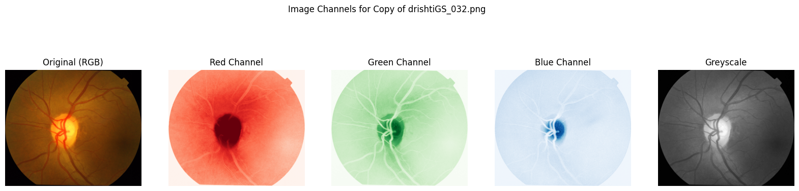
Per-channel contrast around the optic disc: original, red, green, blue, greyscale.
The red channel gives the clearest contrast between disc and surrounding tissue.→Segment the disc by Otsu thresholding on red. For the cup, green and blue were tried too and gave poor results, so red is used there as well.
Equalizing the localized region spreads its intensities, which should make the cup easier to separate. The cup-to-disc size ratio suggests a few intensity clusters.→Test four k-means variants (k = 3 or 4, raw or equalized red). Raw red with k = 4 scored best, so the final pipeline skips equalization.
Approach
Five steps, each choice following from the exploration above:
Localize the disc. A 330 px sliding window over the greyscale image, taking the brightest region.
Segment the disc. Otsu threshold on the red channel of that region.
Clean the disc mask. Morphological opening, then closing (disk radius 30), then fit an ellipse to the contour.
Segment the cup. Inside the localized disc, k-means clustering (k = 4) on the red channel again (green and blue gave poor cup results); the brightest cluster is the cup.
Clean the cup mask. Closing, then opening (disk radius 30), then the same ellipse fit.
The disk radii were set empirically, and k = 4 was picked by F1 across the four variants.
Outcome
Disc segmentation is consistently strong; cup segmentation is harder, and fitting an ellipse to the result recovers about 8 points of F1.
Test-set F1Segmentation+ Ellipse fit
Optic disc
0.955 → 0.943
Optic cup
0.735 → 0.808
100%disc localization coverage
+8 ptscup F1 from ellipse fit
0.947mean disc F1 (val)
Ellipse fit, and the disc evaluation map
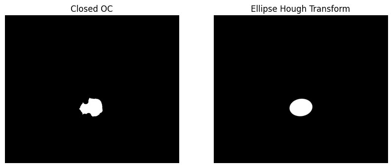
Regularizing the cup — the raw mask is a rough blob; fitting an ellipse gives a smooth boundary matching real anatomy, which is most of the 8-point gain.
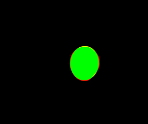
Where disc errors live — almost entirely true positive (green), with the small miss concentrated in a thin rim (red) at the boundary.
Limits
Disc localization scans the full image, which is computationally wasteful. Disc radius and the cup's k=4 were tuned on this dataset and may not generalize to others. A deep-learning cup segmenter would likely score higher.
PythonNumPyOpenCVscikit-imageSciPyMatplotlibClassical CV, no deep learning
Public repo · Drishti-GS dataset (101 fundus images)
05
Doc-Extractor
describe the data, get a table
2026SoloPrototypeRuns locally
Doc-Extractor fills a table from documents. You describe the data you want, and it pulls the values out instead of you copying them by hand.
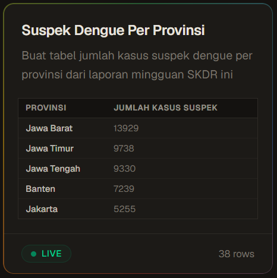
The demo dataset: suspected dengue cases per province, live, 38 rows
Aim
To build a tool where you describe the data you need and a table fills itself from documents, instead of copying values out by hand.
EXPLORATION — WHAT BROKE ON A REAL 85-PAGE HEALTH REPORTFindings
Reading the PDF in stream order interleaves side-by-side blocks: a heading arrives after the bullets it labels, and narrative runs into chart titles and axis values.→Recover the page layout geometrically (recursive XY-cut) before any model reads it.
Judging a whole page biases toward its dominant topic, so one relevant sentence among unrelated tables gets lost.→Classify chunks, not pages. Over-select first, then prune with the candidates side by side.
Given every retrieved page in one call, the model extracted a plausible subset of rows and stopped. Two different models did the same.→Extract in small batches, and escalate only the low-confidence batches to a stronger model.
Approach
Two versions fill the same live table (FIG. 8). Version 1 reads a PDF or URL you provide: it parses the page layout, retrieves the relevant pages, and extracts rows in batches. Version 2 searches the web, restricted to trusted health sources (Kemenkes, WHO), and every row keeps the quoted evidence it came from.
The findings above set Version 1's design. Version 2 trades your own document for source control: only allowlisted sites are read, so each value can be traced back.
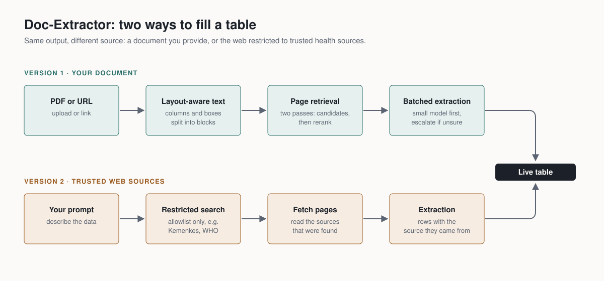
FIG. 8 — two ways to fill one table
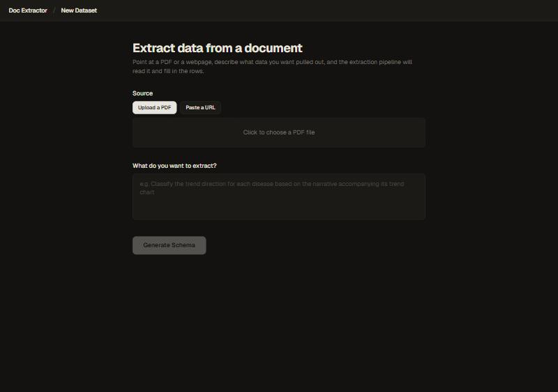
Source picker: upload a PDF or paste a URL, then describe the data
Outcome
In the Version 1 eval, the pipeline found every target row and most of the labels were correct. That run used a prompt hint that was later removed and has not been re-run, so read it as indicative. The live demo table holds 38 provinces of case counts. Version 2 has not been measured yet.
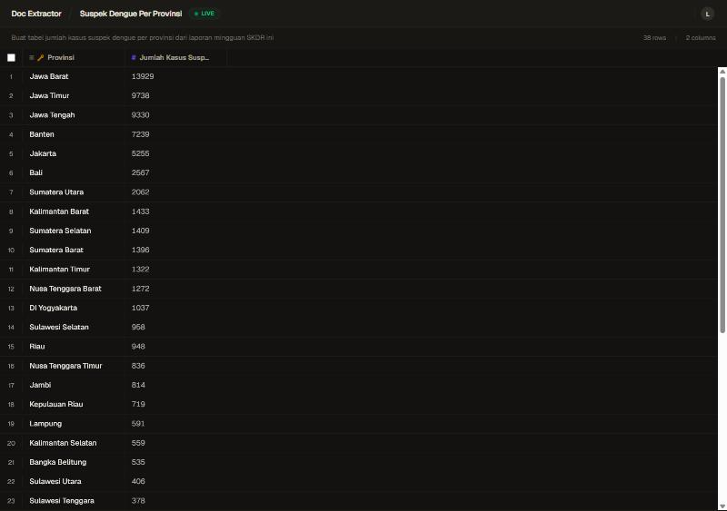
The live table: suspected dengue cases per province, from a weekly national surveillance report
38rows in the live demo table
2versions sharing one table UI
Limits
The accuracy check is one run on one report, with a hint that no longer exists. Version 2 has no numbers. The app runs locally only.